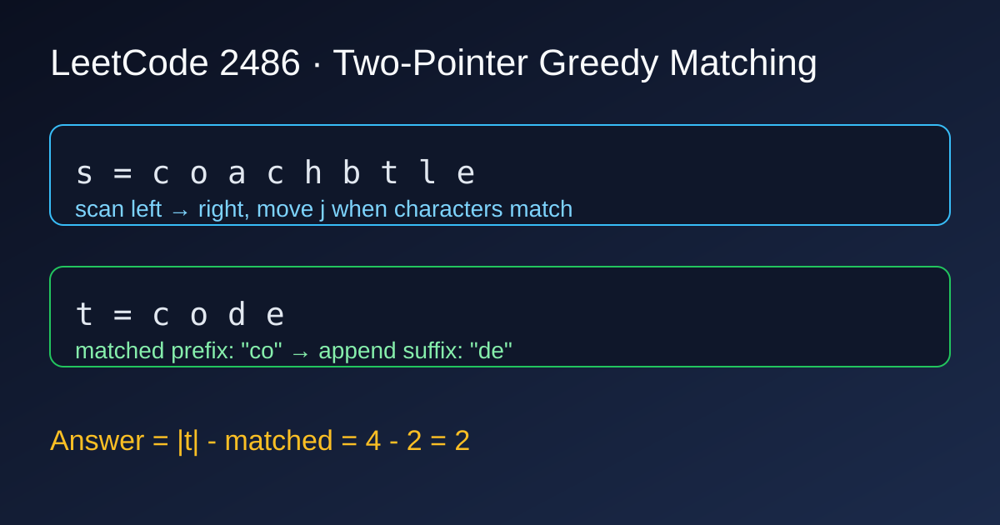

LeetCode 2486: Append Characters to String to Make Subsequence (Two-Pointer Greedy Match)
LeetCode 2486StringTwo PointersGreedyToday we solve LeetCode 2486 - Append Characters to String to Make Subsequence.
Source: https://leetcode.com/problems/append-characters-to-string-to-make-subsequence/

English
Problem Summary
Given two strings s and t, you may append characters to the end of s. Return the minimum number of characters needed so that t becomes a subsequence of the final string.
Key Insight
Only the unmatched suffix of t needs to be appended.
Use two pointers: scan s with i, track matched position in t with j. Whenever s[i] == t[j], move j forward.
After scanning all of s, exactly j chars of t are matched. So answer is len(t) - j.
Algorithm
- Initialize j = 0.
- For each character c in s: if j < len(t) and c == t[j], then j++.
- Return len(t) - j.
Complexity Analysis
Time: O(|s|).
Space: O(1).
Reference Implementations (Java / Go / C++ / Python / JavaScript)
class Solution {
public int appendCharacters(String s, String t) {
int j = 0;
for (int i = 0; i < s.length() && j < t.length(); i++) {
if (s.charAt(i) == t.charAt(j)) j++;
}
return t.length() - j;
}
}func appendCharacters(s string, t string) int {
j := 0
for i := 0; i < len(s) && j < len(t); i++ {
if s[i] == t[j] {
j++
}
}
return len(t) - j
}class Solution {
public:
int appendCharacters(string s, string t) {
int j = 0;
for (int i = 0; i < (int)s.size() && j < (int)t.size(); i++) {
if (s[i] == t[j]) j++;
}
return (int)t.size() - j;
}
};class Solution:
def appendCharacters(self, s: str, t: str) -> int:
j = 0
for ch in s:
if j < len(t) and ch == t[j]:
j += 1
return len(t) - jvar appendCharacters = function(s, t) {
let j = 0;
for (let i = 0; i < s.length && j < t.length; i++) {
if (s[i] === t[j]) j++;
}
return t.length - j;
};中文
题目概述
给定字符串 s 和 t，你可以在 s 的末尾追加字符。返回最少需要追加多少字符，才能让 t 成为最终字符串的子序列。
核心思路
真正需要补的，只有 t 中没匹配上的后缀。
双指针：用 i 扫描 s，用 j 指向 t 当前待匹配字符。若 s[i] == t[j]，就让 j 前进。
当 s 扫完后，t 的前 j 个字符已匹配，因此答案是 len(t) - j。
算法步骤
- 初始化 j = 0。
- 遍历 s 的每个字符 c：若 j < len(t) 且 c == t[j]，则 j++。
- 返回 len(t) - j。
复杂度分析
时间复杂度：O(|s|)。
空间复杂度：O(1)。
多语言参考实现（Java / Go / C++ / Python / JavaScript）
class Solution {
public int appendCharacters(String s, String t) {
int j = 0;
for (int i = 0; i < s.length() && j < t.length(); i++) {
if (s.charAt(i) == t.charAt(j)) j++;
}
return t.length() - j;
}
}func appendCharacters(s string, t string) int {
j := 0
for i := 0; i < len(s) && j < len(t); i++ {
if s[i] == t[j] {
j++
}
}
return len(t) - j
}class Solution {
public:
int appendCharacters(string s, string t) {
int j = 0;
for (int i = 0; i < (int)s.size() && j < (int)t.size(); i++) {
if (s[i] == t[j]) j++;
}
return (int)t.size() - j;
}
};class Solution:
def appendCharacters(self, s: str, t: str) -> int:
j = 0
for ch in s:
if j < len(t) and ch == t[j]:
j += 1
return len(t) - jvar appendCharacters = function(s, t) {
let j = 0;
for (let i = 0; i < s.length && j < t.length; i++) {
if (s[i] === t[j]) j++;
}
return t.length - j;
};
Comments